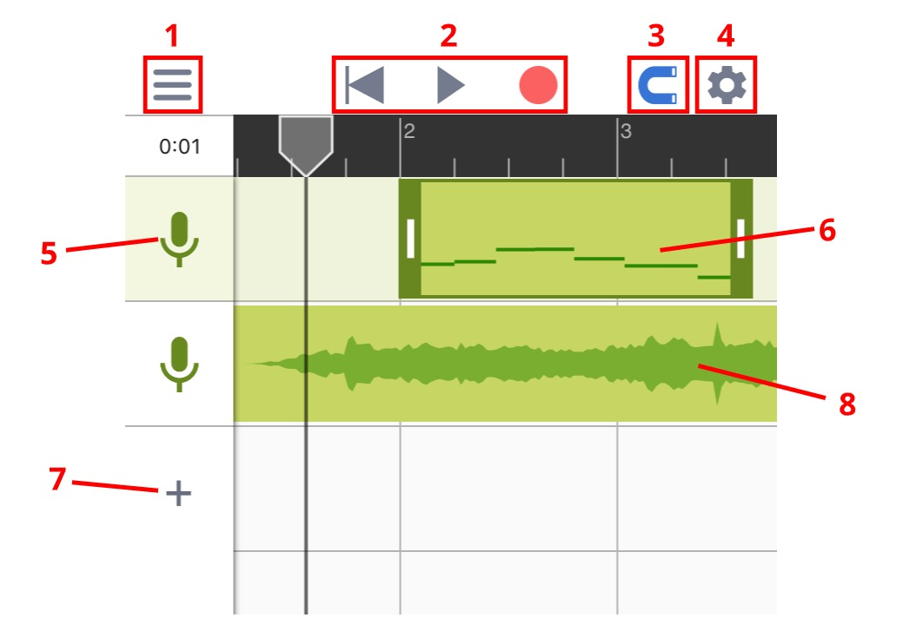
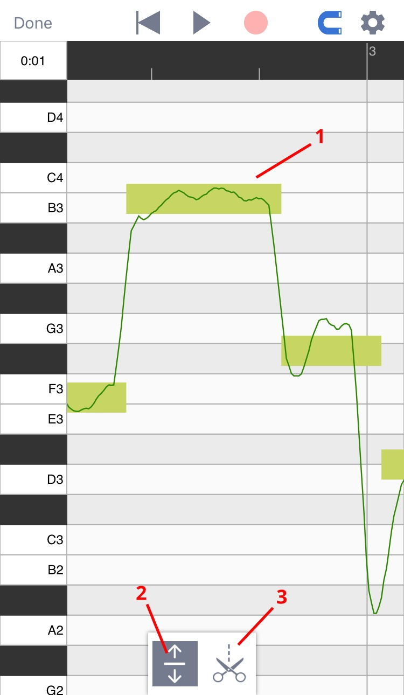
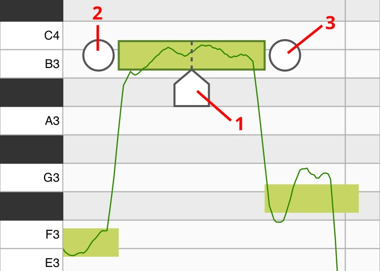

上手指南
音乐黏土是一款强大的音高编辑器。当你用音乐黏土录歌的时候，程序的算法会分析你人声的音高，并且允许你对每一个音符的音高进行修改。虽然算法这词听起来可能有点复杂不过音乐黏土的界面非常简单，只要了解了下面两个程序页面就可以轻松使用。
工程页面
在工程页面下你可以添加音轨，录制人声并摆放已经录好的片段。

3
对齐网格: 点开后所拖动的东西会自动对齐网格。
5
音轨图标: 点一次会选中此音轨，点两次可以打开音轨的音量设置。
6
人声音频: 人声音频上的微型图展示了音频里所有的音符，双击人声音频可以进入音高编辑页面。
8
伴奏音频: 伴奏音频会以声波图的形式显示在界面上。
音高编辑页面
在音高编辑页面里你可以对每一个音符的音高进行修改。（通过双击人声音频来打开该页面）

1
算法检测到的音符: 方形的轮廓代表音符的大致音高。轮廓里的线条代表了在每一时刻的精准音高。
3
音符分离工具: 用这个工具来切分或合并音符。（具体见下图）

1
位置标记: 移动它来设置你想在哪里切开当前音符。移动到位后点击位置标记（或者上拉）即可把当前音符一分为二。
2
合并按钮（左）: 点这里可以让当前音符和左边的音符合并。
3
合并按钮（右）: 点这里可以让当前音符和右边的音符合并。